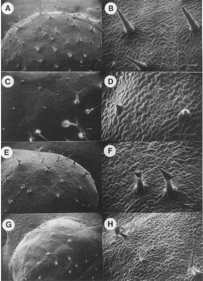

Figure 4. SEM analysis of mutant sectors only affected in trichome formation.
A) and B) Sector containing unbranched trichomes. C) and D) Sector containing
rudimentary trichomes. E) and F) Sector containing distorted-like
trichomes. G) and H) Sector containing trichomes with an abnormally expanded
stalk. A), C), E), and G) are lower magnifications of the same images shown
in B), D), F), and H), respectively. The bar in the lower left of each figure
represents 100 µ.